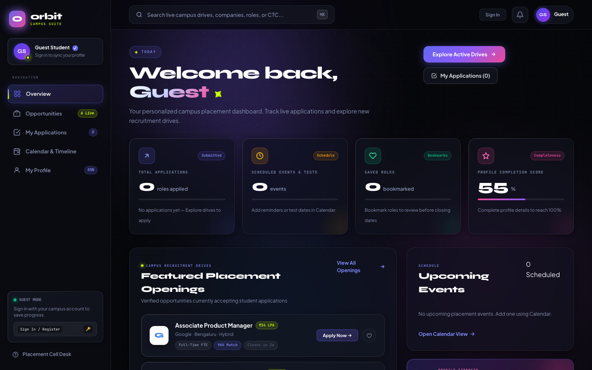
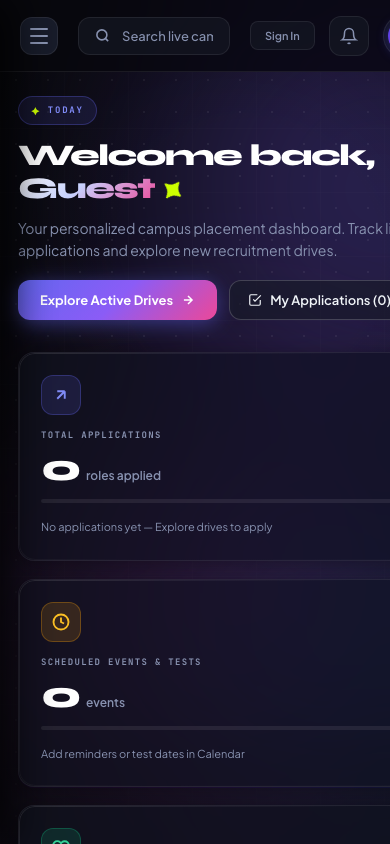

Job Discovery
Roles live in emails, PDFs, and boards — hard to scan by type, location, or fit.
Project 01
University Placement Web Experience Suite
A responsive web experience designed to help students discover placement opportunities, track applications, manage interviews, and stay on top of their recruitment journey.

Overview
Orbit is a campus placement suite with five primary surfaces: an overview dashboard, job discovery, application tracking, an interview calendar, and a candidate profile. It is implemented as a static, responsive web experience and published on GitHub Pages.
The Problem
Students often manage placement information across job listings, announcements, application portals, and interview schedules. This can make it difficult to discover relevant opportunities, track application progress, and stay aware of deadlines.
Roles live in emails, PDFs, and boards — hard to scan by type, location, or fit.
Submitted applications are easy to lose without a shared status model.
Closing dates sit in different calendars, so urgency is easy to miss.
Tests, rounds, and reminders are rarely connected to the role they belong to.
Research
This section is structured for real research. Findings are not invented.
Students interviewed
[ADD REAL NUMBER]
Recurring pain points
[ADD REAL NUMBER]
Research method
Short interviews / survey / observation
[ADD REAL USER RESEARCH]
User quotes will be added here once interviews are complete.
[ADD REAL USER QUOTE]
Key Insights
01
[REAL INSIGHT]
02
[REAL INSIGHT]
03
[REAL INSIGHT]
Persona
Name
[ADD REAL DATA]
Program
[ADD REAL DATA]
Year
[ADD REAL DATA]
[ADD REAL DATA]
[ADD REAL DATA]
[ADD REAL DATA]
[ADD REAL DATA]
User Journey
Discover
User goal: Know what is open this week.
Pain point: Opportunities arrive through scattered announcements.
Orbit response: Overview dashboard with featured openings and a live opportunities count.
Search
User goal: Find a relevant role quickly.
Pain point: Lists are long and weakly filtered.
Orbit response: Search, filters by contract type and domain, and a command palette for keyboard access.
Evaluate
User goal: Decide if a role is worth applying to.
Pain point: CTC, location, and close date are hard to compare.
Orbit response: Job cards surface company, location, CTC, match score, and closing urgency together.
Apply
User goal: Submit interest without losing context.
Pain point: Application lives in a separate form with no trail.
Orbit response: Apply flow from the role card, with applications collected in one tracker.
Track
User goal: See where each application stands.
Pain point: Status is verbal or buried in email.
Orbit response: Application pipeline with review, interview, and offer stages.
Interview
User goal: Show up prepared and on time.
Pain point: Test slots sit outside the job record.
Orbit response: Calendar, reminders, and a placement schedule view.
Offer
User goal: Keep profile and paperwork ready.
Pain point: Resume and projects are incomplete when recruiters look.
Orbit response: Profile completeness checklist and radial readiness score.
Information Architecture
Wireframes
Problem → Wireframe → Iteration → Final UI
[ADD WIREFRAME IMAGE]
Low fidelity
[ADD WIREFRAME IMAGE]
Mid fidelity
[ADD WIREFRAME IMAGE]
Final direction
Design System
Orbit uses a dark campus-suite language: deep surfaces, specular borders, and a small set of status colors. The portfolio stays warm and editorial on purpose, so the product can keep its own identity.
Placement Drives
Track applications, filters, and profile details in a readable UI size.
CTC · MATCH · ⌘K
Spacing, radius, type scale, elevation, and motion are defined as CSS custom properties so the same language can hold dashboard, jobs, calendar, and profile without restyling each screen from scratch.
High-Fidelity UI
[ADD JOB DETAILS SCREENSHOT]
[ADD APPLICATION TRACKING SCREENSHOT]
[ADD INTERVIEW CALENDAR SCREENSHOT]
[ADD PROFILE SCREENSHOT]

Interaction Design
Purpose: Give job cards a tactile hover so density still feels physical on desktop.
Implementation: Pointer position maps to a small rotateX/rotateY transform on the card.
Purpose: Provide fast keyboard-driven navigation for frequent users.
Implementation: JavaScript keyboard interaction with responsive UI feedback (⌘K / Ctrl+K).
Purpose: Let students sign in or register without leaving the current placement context.
Implementation: Overlay with a sliding Sign In / Create Account control and form fields in one surface.
Purpose: Make profile completeness readable at a glance.
Implementation: Animated SVG gauge tied to checklist items on the profile.
Purpose: Show recruitment stage without opening every application.
Implementation: Multi-stage status UI from review through interview to offer.
Purpose: Keep the five primary destinations available on small screens.
Implementation: Off-canvas navigation with the same destinations as the desktop sidebar.
Purpose: Confirm actions such as bookmarking, applying, and saving reminders.
Implementation: CSS transitions and toast/feedback states in vanilla JavaScript.
Usability Testing
Participants
[REAL NUMBER]
Task completion
[REAL RESULT]
Main friction
[REAL RESULT]
Changes made
[REAL RESULT]
Iterations
Iteration 01
Before
[ADD BEFORE IMAGE / NOTE]
User feedback
[ADD ACTUAL USABILITY RESULT]
Design change
[ADD REAL DATA]
After
[ADD AFTER IMAGE / NOTE]
Iteration 02
Before
[ADD BEFORE IMAGE / NOTE]
User feedback
[ADD ACTUAL USABILITY RESULT]
Design change
[ADD REAL DATA]
After
[ADD AFTER IMAGE / NOTE]
Iteration 03
Before
[ADD BEFORE IMAGE / NOTE]
User feedback
[ADD ACTUAL USABILITY RESULT]
Design change
[ADD REAL DATA]
After
[ADD AFTER IMAGE / NOTE]
Final Implementation
Orbit was implemented as a responsive static web experience using semantic HTML, CSS, and vanilla JavaScript.
Layouts were checked across desktop, tablet, and mobile so the same IA remains usable when the sidebar becomes a drawer.
Live Product